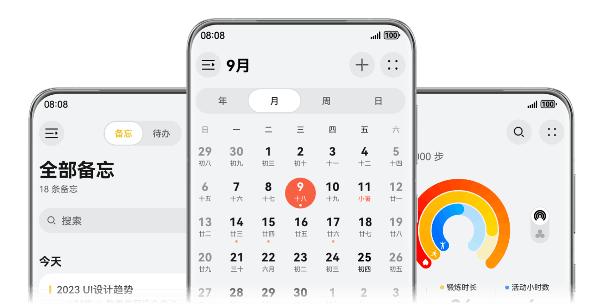
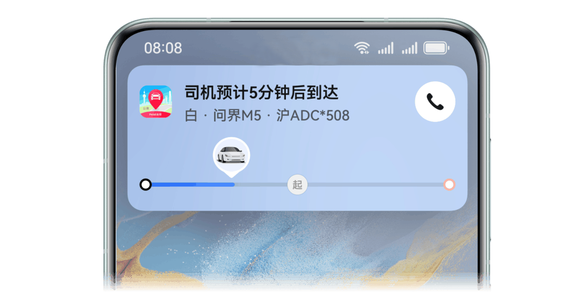
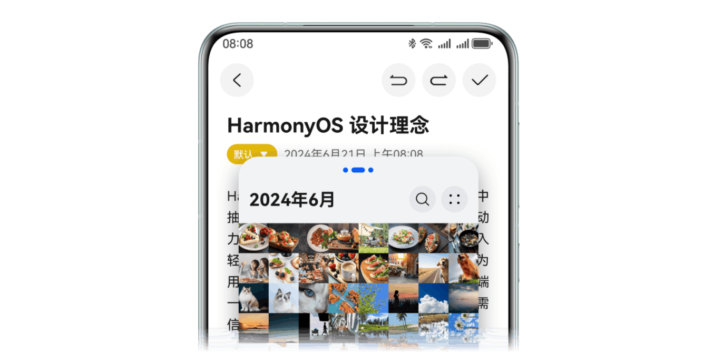
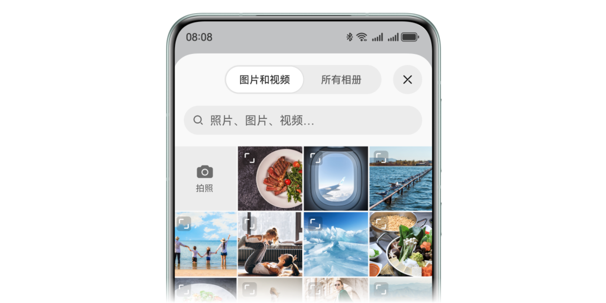
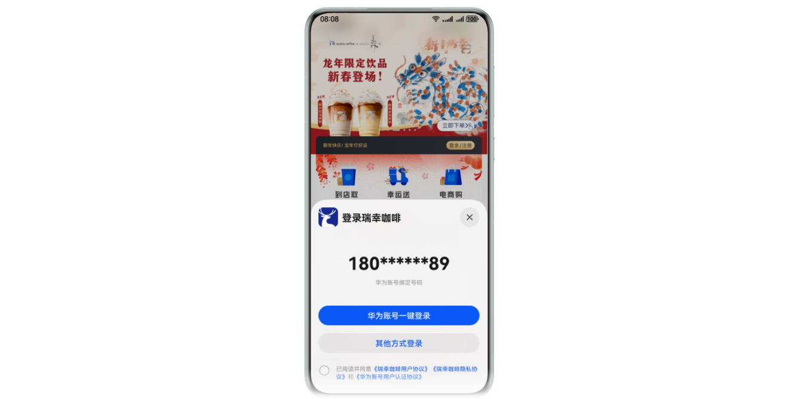
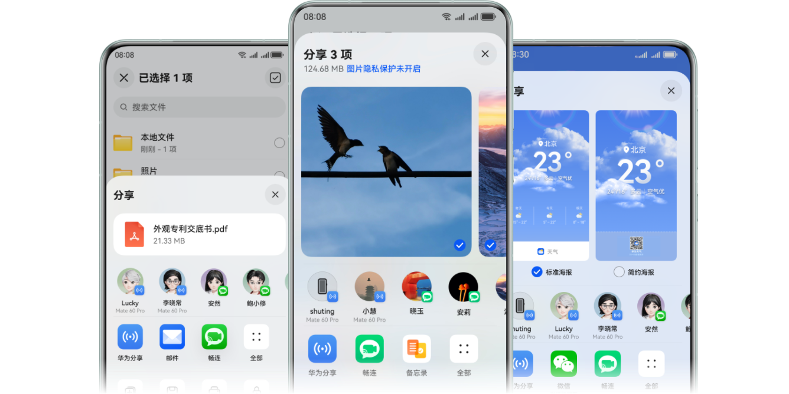
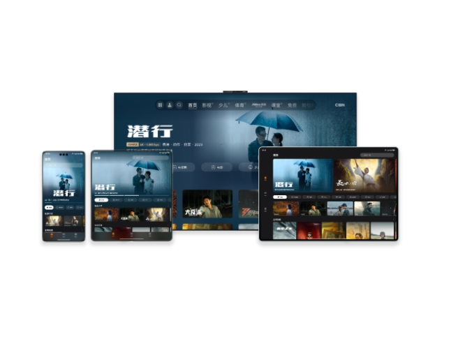
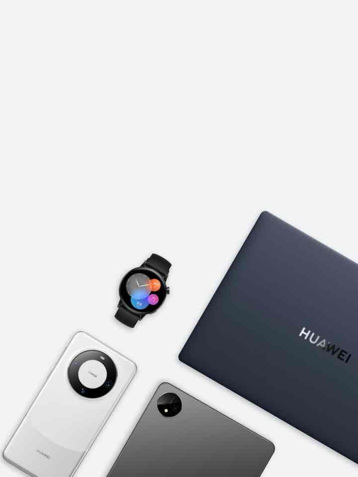
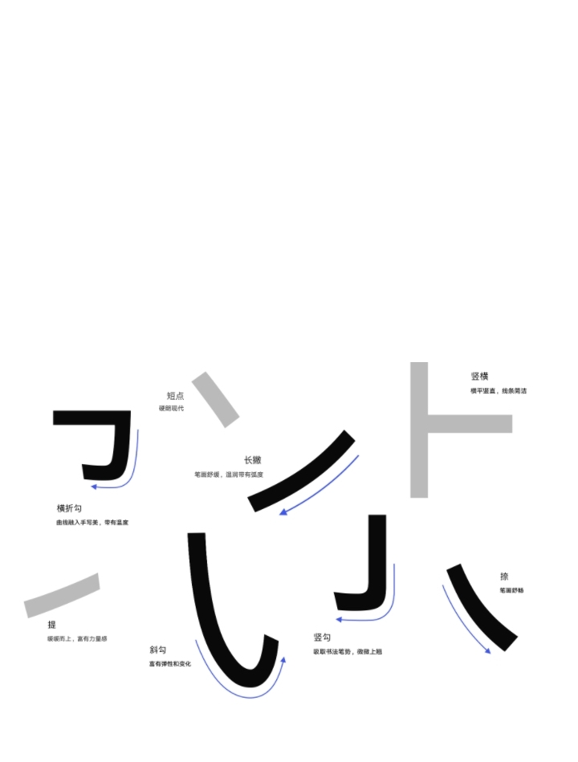

HarmonyOS 特征设计指南
提供HarmonyOS 完整设计规范，以及创新特性的适配规范，让你快速构建出
HarmonyOS 全场景设备的创新体验。

新控件
提供基于 HarmonyOS
版本风格的控件样式及设计规范，帮助你快速了解控件设计和基础能力。

实况窗设计
实况窗设计包含了卡片态、胶囊态、沉浸态，帮助用户聚焦进行中任务、方便快速查看和即时处理。

一键登录
华为账号提供登录设计规范，保障 HarmonyOS
应用拥有简单易用、高效一致、快速安全的登录体验。

元服务设计
轻量高效、即点即用，多形态的组件构成样式为用户提供丰富便捷的应用服务。

多窗
包含悬浮窗、分屏不同的窗口形态，为你提供灵活高效的多任务并行体验。

分享
为各场景的内容分享体验提供设计规范，帮助你了解系统分享能力。
多设备响应式设计
HarmonyOS
应用设计支持适配不同的屏幕尺寸和设备类型。保持多设备体验的连续性，降低你的工作量和维护成本。

应用UX体验标准
本标准从影响用户体验的各个维度定义了相应测试规范，规定了应用需达到的基础体验要求，用于引导应用的设计与开发，以保证应用良好的使用体验。
了解详情

多设备典型场景设计案例
为你提供适合特征型场景的界面设计样式、方便你结合应用的业务场景，进行最佳界面适配和创新设计。
了解详情

设计资源
为你提供多种效率组件和界面模版，以及不断更新的设计资源库，包含图标、色彩、文字、音效等丰富的资源。
-
字体 Fonts
-
组件 Components
-
图标 Icons
了解详情